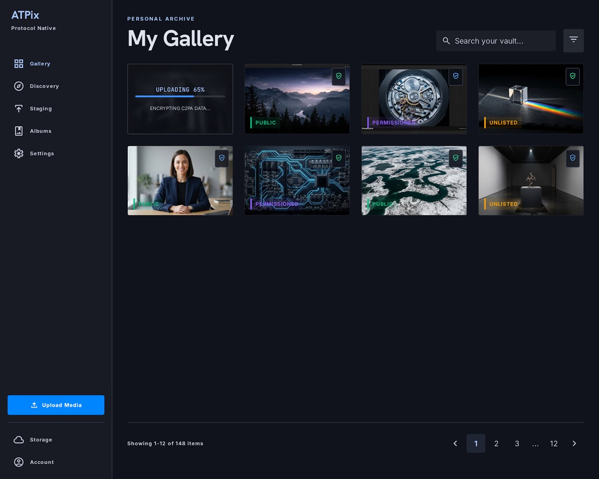
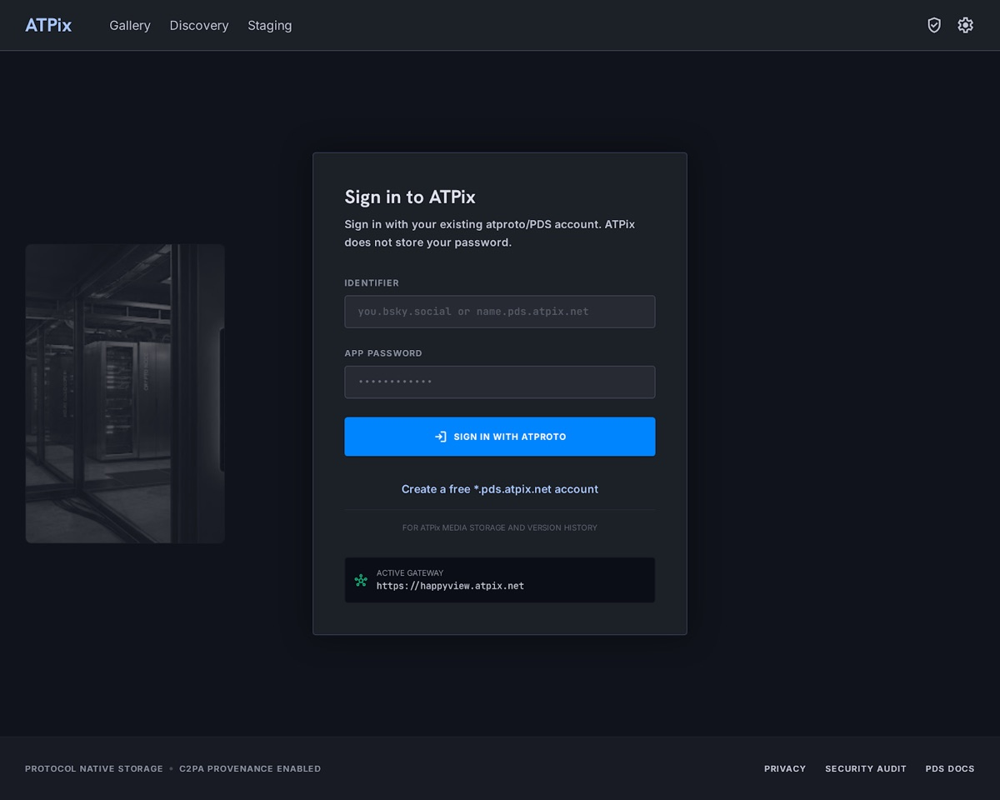
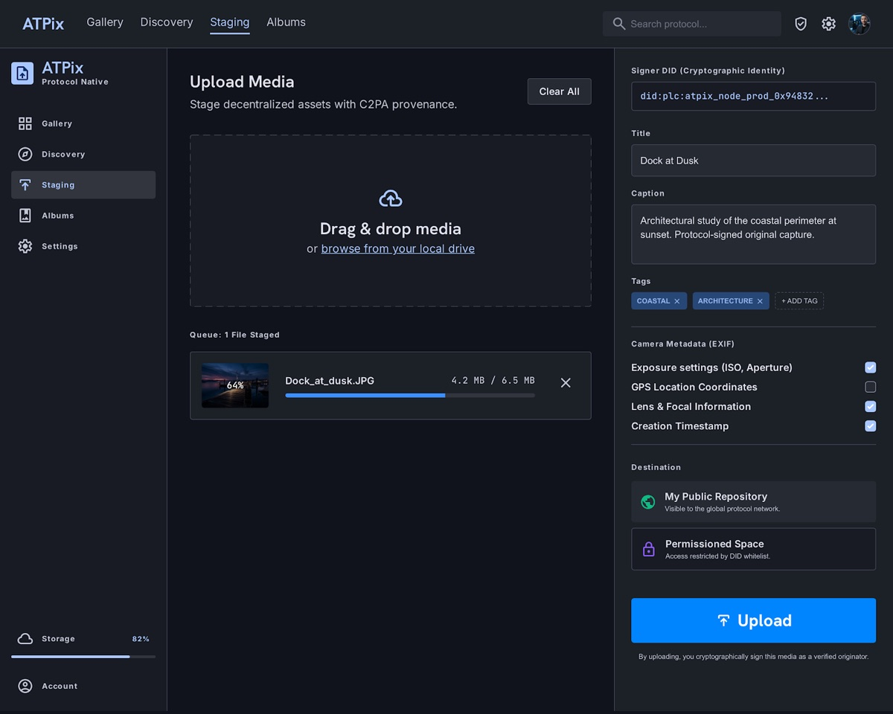
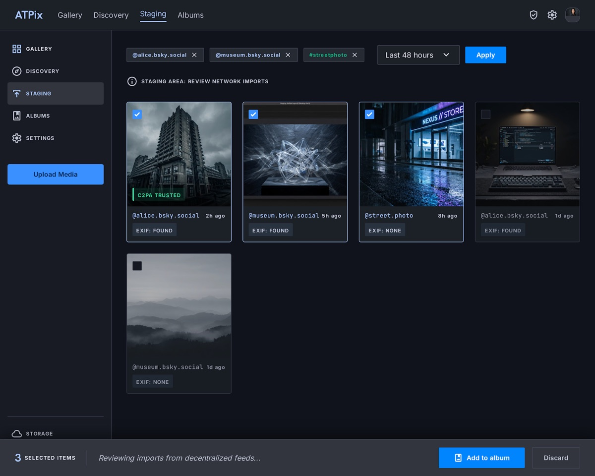
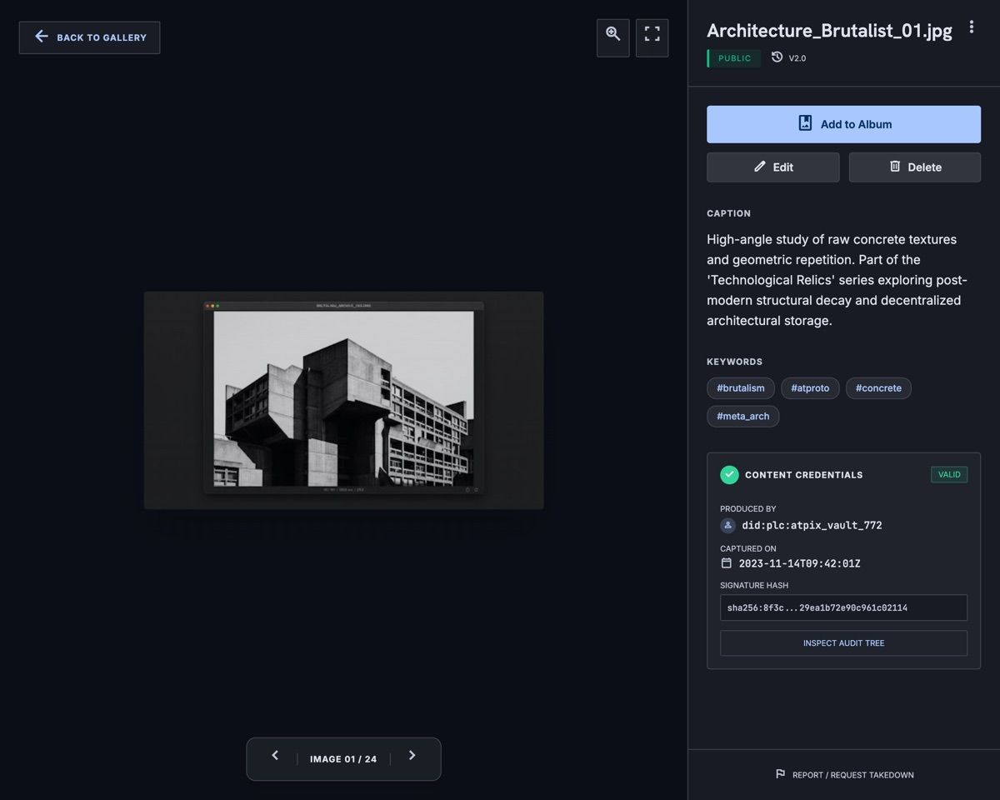
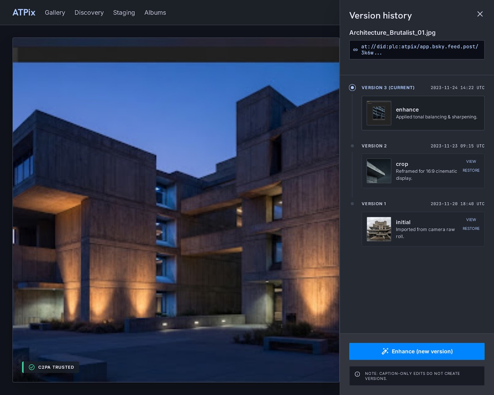
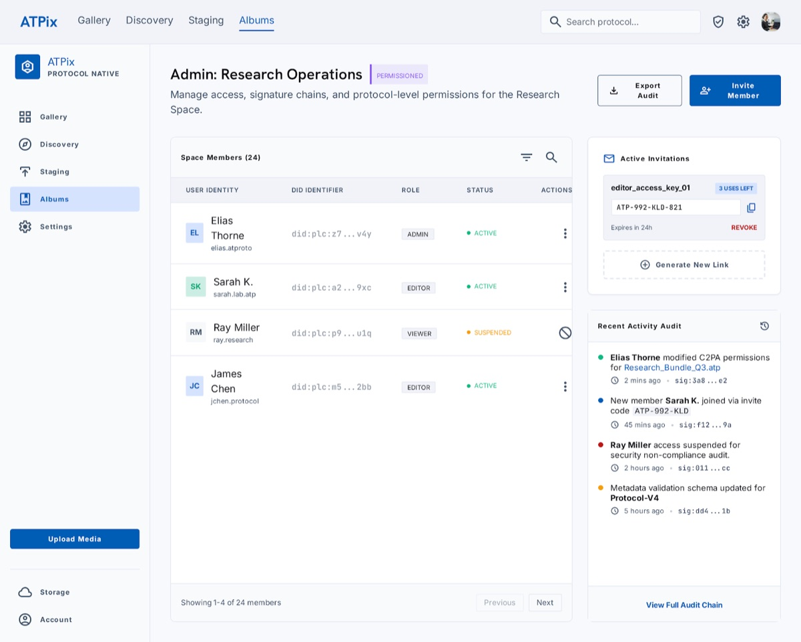
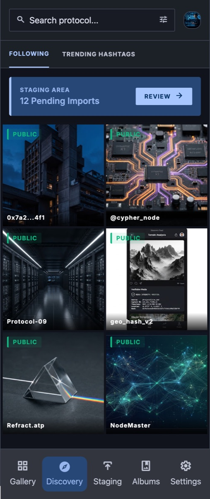

No more hostage libraries
Your identity is a DID/handle. Your gallery records are portable Lexicon data. When you leave, your work doesn’t evaporate with a single vendor’s CDN.
ATPix is the gallery built for creators who refuse to lock their work in a silo. Sign in with your atproto handle, publish with Content Credentials, organize albums the network can read—and keep archives that still belong to you.
Built for photographers, Bluesky / atproto users, and early adopters shaping the open media web.

My Gallery · live product UI
Why ATPix
Mainstream platforms treat your portfolio as engagement fuel. Generic social clients treat media as throwaway attachments. ATPix is a product for people who care about ownership, trust, and longevity—while still feeling like a modern gallery.
Your identity is a DID/handle. Your gallery records are portable Lexicon data. When you leave, your work doesn’t evaporate with a single vendor’s CDN.
Content Credentials label validation state—VALID, TRUSTED, INVALID, NONE—not “authentic photo” theater. Creators and viewers get honest signals.
Client work, family sets, embargoed shoots: invite members by handle. Membership-gated access—not pretend end-to-end encryption marketing.
Features
MVP today focuses on the flows that win early users: sign-in, upload with provenance, gallery, discovery/staging, permissioned albums, and archive controls.
Use Bluesky or a *.pds.atpix.net handle. No new password silo—OAuth to your PDS.
Publish network-ready images with C2PA manifests. Choose what non-PII camera metadata hits the public record; keep the rest private.
My Gallery is a real working surface—search, upload, visibility chips, and provenance badges in a media-first layout.
Pull candidates from accounts and hashtags (including Bluesky), review a time window (default 48h), then add only what belongs in your albums.
Operator-path users get content versions you can view and restore—enhance and crop without losing prior masters.
Leave with zip/tar OCFL-style packages when you need portability. The network still sees a normal image for interoperability.
Product tour
UI frames from the ATPix design system—protocol-native dark chrome, media first, high precision.
Identity
Sign in with the account you already use on the Atmosphere—or create a free ATPix-hosted handle when you want full media history and packages. Your DID is the constant; apps come and go.
*.pds.atpix.net welcome

Publish
Every publish path is built for photographers: signed credentials, EXIF stripped from public bytes by default, and optional non-PII fields you choose for the public record.
Discovery → curation
Pull from accounts and hashtags across the network—including the Bluesky firehose of public photos—review candidates in Staging, then add only what belongs in your ATPix albums.


Detail & history
Open the work: caption, keywords, Content Credentials, version history for operator-path libraries, and a path for anyone to report a rights concern—without burying the image under chrome.

Content versions for enhance and crop—caption-only edits stay light. Restore creates a new head without erasing the past.

Invite collaborators by Bluesky or ATPix DID. Roles, audit trail, membership—not “encrypted for DIDs” snake oil.
Everywhere you create
The product is designed for phone-first sessions—bottom nav, touch targets, media-first detail sheets—so your first community can actually use it in the field.

Technical innovations
The network always sees a normal image blob for interoperability. Creators on ATPix media also get durable versioned packages—so Atmosphere apps keep working while you keep archive integrity.
One rkey for the life of the photo. Versions advance underneath. Links and albums don’t shatter every time you enhance a master.
net.atpix.gallery.* records are readable by any compatible app. Your gallery isn’t trapped in a proprietary schema.
Full EXIF stripped from public pixels; private vault for you when enrolled; only non-PII fields you opt into appear on the public record.
Join the first community
ATPix is at MVP—real product surfaces, real protocol commitments, and a community that still gets a voice. Star the repo, follow on Bluesky, and help us pressure-test the flows that matter.
MVP · Built on AT Protocol · Product by Arkrim